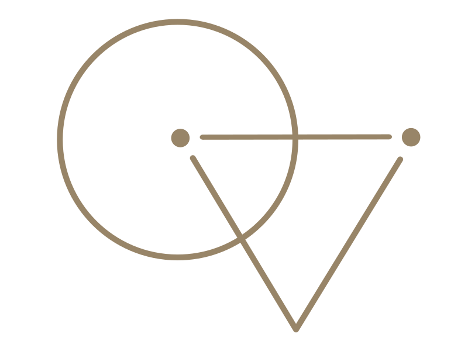

<aside id="placid-aside" class="placid-aside bg-0f1d22" [ngClass]="state ? 'active-placid-aside' : ''">
    <div class="logo">
        <a routerLink="/home" fragment="home">
            
        </a>
    </div>

    <div class="d-table">
        <div class="d-table-cell">
            <ul class="navbar-nav">
                <li class="nav-item" *ngFor="let link of routerLinks">
                    <a class="nav-link"
                       [routerLink]="[link.path]"
                       [fragment]="link.section">
                    {{link.name}}</a></li>
                <li class="nav-item" matTooltip="Github"><a class="nav-link" href="https://github.com/QVllasa" target="_blank"><i
                    class="ri-github-line ri-2x"></i></a></li>
            </ul>
        </div>
    </div>

    <div class="aside-footer">
        <a style="cursor: pointer;" (click)="openDialog()" class="default-btn">Contact</a>
        <ul class="social">
            <li><a href="#" target="_blank"><i class="ri-facebook-box-line"></i></a></li>
            <li><a href="#" target="_blank"><i class="ri-twitter-line"></i></a></li>
            <li><a href="#" target="_blank"><i class="ri-linkedin-box-line"></i></a></li>
            <li><a href="#" target="_blank"><i class="ri-instagram-line"></i></a></li>
        </ul>
    </div>

    <div class="line"></div>

<!--    <div class="aside-show-hide">-->
<!--            <span>-->
<!--                <i class="ri-arrow-left-line"></i>-->
<!--            </span>-->
<!--    </div>-->
</aside>
